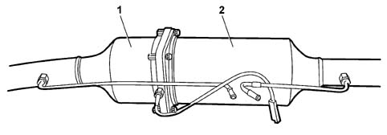

1080 EXHAUST EMISSION CONTROL SYSTEM
- Path
- Descriptions > 10 ENGINE > 1080 EMISSION CONTROL SYSTEM > 1080 EXHAUST EMISSION CONTROL SYSTEM
- Kind
- system description
- Applies to
- engines: 2.0 16V JTD, 2.2 16V JTD; all production periods
- Interactive page
- https://sloeber94.github.io/elrnDB-fUlss/en/#/179006619
Applies to: engines: 2.0 16V JTD, 2.2 16V JTD; all production periods
INTRODUCTION
The exhaust emissions and control system is managed by the NCM and includes the catalyzer function combined with the FAP Anti-Particle Filter function.

1, Catalytic converter
2, Anti-Particle Filter FAP